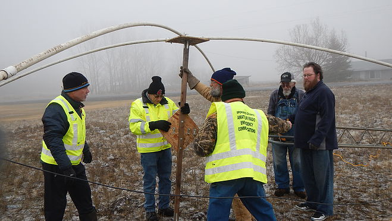
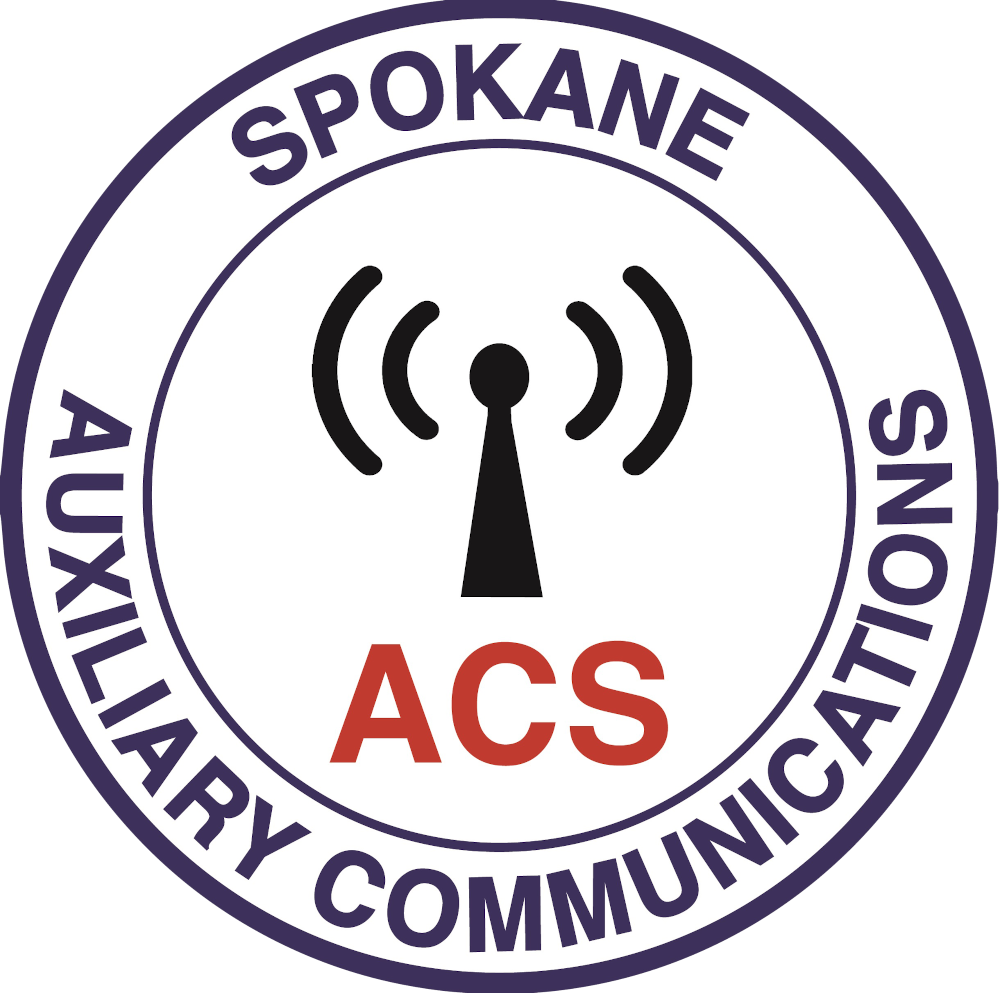
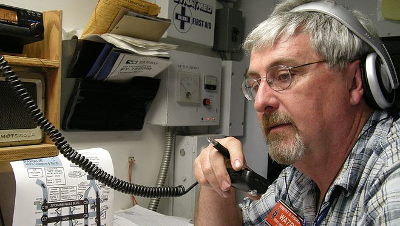

Make a difference with a radio in your hand.
“He was a person who made a difference in Spokane by making others feel like they could make a difference themselves.”
Spokane County ARES-ACS trains licensed amateur radio operators to provide auxiliary backup communications for Spokane County Emergency Management, the National Weather Service, local hospitals and community events.
Here’s what it takes.
These are the ongoing minimums from the team’s ACS Task Book. Weekly check-ins and monthly meetings are encouraged, and leaders can grant exemptions case by case. Verify
-
1
Net check-in a month
Tuesdays at 8 PM, on the W7GBU repeater, from wherever your radio is.
-
1
Meeting a quarter
A Third Thursday training meeting or a Second Saturday workshop.
-
1
Field operation a year
An activation, an exercise, or a public-service event like Bloomsday.
-
72hr
Go-kit, ready to roll
A personal kit and a radio kit. 24 hours is the minimum; 72 is the goal.
What you’d be joining
When normal systems are overloaded or down, Spokane County still has to pass messages. We’re one team of licensed amateur radio (“ham”) operators who volunteer to carry that backup traffic.
You may know us by our older name, Spokane County ARES/RACES.
ARES Amateur Radio Emergency Service
A national ARRL program open to any licensed ham. ARES members support community events, the National Weather Service and the Red Cross, with no emergency declaration needed. ARRL membership isn’t required.

ACS Auxiliary Communications
Spokane County Emergency Management’s own volunteer radio unit, carrying on the county’s RACES program. After a county background check, ACS members can be activated by the county and work inside emergency operations centers, command posts, hospitals and shelters.
Join ARES only, or both. “Even [if] you don’t or can’t qualify for ACS, our ARES group welcomes you.” Either way, you’d be backing up the professionals, not replacing them. In the Section Emergency Coordinator’s words, “ARES is an auxiliary support function.”
Pick your post
Every post starts on the same Tuesday net. Here’s where members end up.
-
Net control
Run the Tuesday net from the script. Members take turns, and the Net Manager coaches first-timers.
Any member -
Field & shelter operator
Raise masts and run portable stations at exercises, incident command posts and shelters.
ACS for shelters and command posts -
Comm room & EOC
Staff the county’s radio communications room and comm trailer when Emergency Management activates.
ACS -
Hospital station
Keep backup radio and computer gear working with Greater Spokane area hospitals, and check into the Hospital Net.
ACS, plus HIPAA training -
Winlink & digital
Send ICS-213 messages as radio email through the team’s W7GBU-10 Winlink gateway. Practice assignments run every two weeks.
Any member -
Public-event comms
Primary or backup communications for Bloomsday, the Lilac Torchlight Parade, fun runs and bike races.
Any member -
SKYWARN spotter
Report severe weather to NWS Spokane. Spotter training is free, in person or online. Encouraged, never required.
No license needed to train
Found your post?
Start volunteeringFour steps to your county volunteer ID
Tick “I have this” for anything you’ve already done, and the card shows your next step. Your progress stays on this device only.
-
Step 1: Get your license
Class length TBD VerifyYou need an FCC Technician class license or higher. Local classes and exam sessions run through the year.
-
Step 2: Register with ARES
One eveningFill out the Spokane County ARES registration form and bring it to a meeting or email it in. Then join the team’s Groups.io list.
-
Step 3: Apply & attend orientation
4th Tuesday, 6 PMSubmit the county’s Volunteer Emergency Worker Application and pass a background check. Then come to New Member Orientation, a comm room tour and the 8 PM net.
-
Step 4: Train, serve, earn the ID
Six monthsFinish FEMA IS-100 and IS-700, both free online, and stay active for six months. The county then issues your volunteer ID card.
Illustration only. Not a real county ID.
Not licensed yet? Get on the air.
You need an FCC license to transmit. You don’t need one to listen, to learn, or to train as a SKYWARN spotter.
Start without a license: SKYWARN
NWS Spokane trains weather spotters at public sessions or through an online course.
See spotter training-
Listen in
Tune a scanner or 2-meter radio to 147.300 MHz on a Tuesday at 8 PM, or visit a Third Thursday meeting or a Second Saturday workshop.
-
Take a class Verify
License classes run periodically through the year, typically taught by Jack Tiley, AD7FO, and sponsored by Spokane County Emergency Management, the VHF Club and local ARES-RACES. Ask about the next one through the contact form.
-
Pass the exam Verify
Volunteer examiners test locally, including Washington Digital Radio Enthusiasts on third Wednesdays at 6 PM and KARS in Hayden, or online through GLAARG on HamStudy. Volunteers charge no fee; the FCC charges $35 to issue the license.
-
Come back to step 2
Licensed? Register with ARES and you’re on the path to the county ID.
Tuesday is practice.
Every Tuesday night we practice. The day it’s real, we’re ready.
It’s a directed net that doubles as weekly emergency-operations training. Officials check in first, then members by call sign, then visitors. Visitors are invited to check in.
“Listen this Tuesday” saves a weekly 8 PM reminder to your calendar.

Coming up
- Sept 26–27ARES-ACS and WSDOT joint exercise
- Sat, Oct 3Simulated Emergency Test (SET)
- Sat, Oct 10Second Saturday workshop, 9 AM–noon
- Thu, Oct 15Third Thursday training meeting Time TBD
- Tue, Oct 27New Member Orientation, 6 PM, then the net
Meetings are at the Spokane County Emergency Management building, 1121 W. Gardner Ave, next to the County Courthouse.
Who we serve
An ARRL-affiliated ARES group and the county’s auxiliary communications unit, working alongside these agencies and events.
- Spokane County Emergency ManagementOur primary served agency. It activates ACS, runs background checks and issues volunteer IDs.
- National Weather Service, SpokaneSKYWARN spotting and severe-weather nets
- Greater Spokane area hospitalsBackup radio stations and the Hospital Net
- American Red CrossShelter support under the ARRL–Red Cross agreement
- ARRLThe national association for amateur radio, which runs ARES
- Inland Empire VHF Radio AmateursFormal agreement for a backup repeater and packet and Winlink nodes
- Spokane County Sheriff’s OfficeHelicopter safety training
- Washington State Emergency ManagementState nets and mission numbers
- WSDOTJoint exercise, September 2026
- Bloomsday, Lilac Torchlight Parade, ValleyfestPublic-service communications
Start with one evening.
Register with ARES, check in on Tuesday, and see which post fits. The county ID comes after.
Rather ask first?
Come to New Member Orientation on the 4th Tuesday at 6 PM, at 1121 W. Gardner Ave. You’ll tour the comm room and sit in on the 8 PM net.
Or send a question through the contact form.